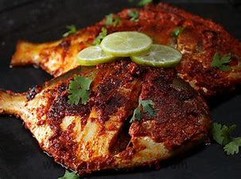

Pomfret Fry
~Shubhangi Anjarlekar

Ingredients
- 2 medium size Pomfret
- 1 tablespoon lemon juice
- 8 to 10 cloves of garlic
- ½ teaspoon turmeric powder
- 2 teaspoon chilli powder
- 1 tablespoon rice flour
- Salt (as preferred)
- Oil
Recipe-
1. Marinate fresh and cleaned pomfret pieces with salt and turmeric powder for 10 to 15 minutes.
2. Add the lemon juice and garlic paste after marination.
3. Add the chilli powder to the rice flour along with salt and turmeric powder.
4. Apply the rice flour mixture to the pomfret pieces and then fry it in oil on both sides within 6 to 7
minutes.
Food Tip by Recipe Writer:
Many fishes such as Kingfish, Salmon, Ghol fish, Ilish(Hilsa) etc. can be cooked similarly
Back to Categories (श्रेणियों में वापस)
Back to Recipes (व्यंजनों पर वापस जाएं)